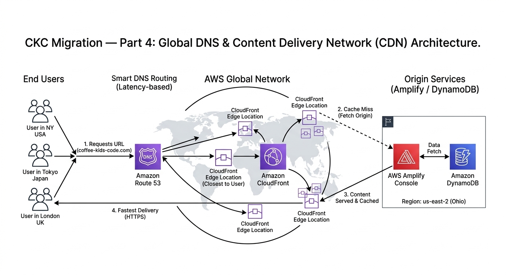

The CKC Migration: Domain & Traffic Routing
At this point in the migration, we have a frontend, a backend, and a database. But currently, the only way to see the site is through a long, ugly .amplifyapp.com URL. To make Coffee + Kids + Code a professional brand, we need a custom domain and a way to route traffic securely and fast.
The Crossroads
Connecting a domain seems simple, but there are two ways to handle how your "assets" (images, CSS, JS) reach your users.
- Option A (Simple DNS): Just point your domain to the Amplify URL. It works, but users far away from your server's home region will experience lag.
- Option B (Route 53 + CloudFront CDN): The "Enterprise" Choice. We use Route 53 for smart DNS routing and CloudFront to cache our site at "Edge Locations" all over the world.

Global Delivery: Using CloudFront to bring the site closer to the user.
My Decision: Route 53 + CloudFront
The "Why"
I’m not just looking for a vanity URL; I’m looking for performance and security. By using CloudFront, I am placing my blog on a Global Content Delivery Network (CDN). This means if a reader in Tokyo visits the site, they aren't waiting for data to travel from an Ohio data center—they are getting a cached version from a server right in their backyard.
Additionally, this setup allows me to manage **SSL Certificates** via AWS Certificate Manager (ACM), ensuring the site is always encrypted with that "Green Padlock" (HTTPS) that users trust.
🛠 My Step-by-Step Guide: Routing Your Traffic
Here is how I moved from a raw AWS URL to a branded domain:
Step 1: Registered the Domain
I used Route 53 to register my domain. This creates a "Hosted Zone" in AWS, which acts as the master record for where every request to my domain should go.
Step 2: Requested an SSL Certificate
Security is non-negotiable. I went to AWS Certificate Manager (ACM) and requested a public certificate for my domain. Because I use Route 53, AWS was able to automatically "prove" I owned the domain and issued the certificate in minutes.
Step 3: Attached the CDN (CloudFront)
Inside the Amplify console, I went to Domain Management. AWS Amplify makes this easy by automatically setting up a CloudFront distribution for you when you connect a custom domain. It handles the "caching" logic so my images and styles load instantly.
Step 4: The DNS Handshake
Finally, I added an "Alias" record in Route 53 pointing my root domain to the CloudFront distribution. Now, when you type in the URL, AWS handles the rest.
Previous: Part 3 — The Backend Framework (.NET 9)